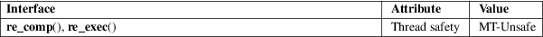

re_comp, re_exec − BSD regex functions
Standard C library (libc, −lc)
#define
_REGEX_RE_COMP
#include <sys/types.h>
#include <regex.h>
[[deprecated]]
char *re_comp(const char *regex);
[[deprecated]] int re_exec(const char
*string);
re_comp() is used to compile the null-terminated regular expression pointed to by regex. The compiled pattern occupies a static area, the pattern buffer, which is overwritten by subsequent use of re_comp(). If regex is NULL, no operation is performed and the pattern buffer’s contents are not altered.
re_exec() is used to assess whether the null-terminated string pointed to by string matches the previously compiled regex.
re_comp() returns NULL on successful compilation of regex otherwise it returns a pointer to an appropriate error message.
re_exec() returns 1 for a successful match, zero for failure.
For an explanation of the terms used in this section, see attributes(7).

None.
4.3BSD.
These functions are obsolete; the functions documented in regcomp(3) should be used instead.
regcomp(3), regex(7), GNU regex manual